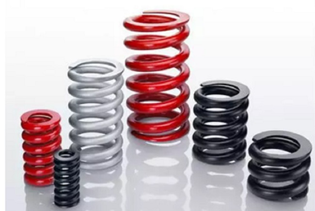
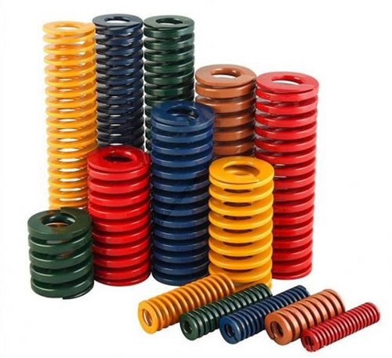

In the Face of an Epidemic, How Should We Ensure Security?
2020-02-19 15:36:14
- TAG :
At present, China's national defense control of a new coronavirus-infected pneumonia epidemic is at a critical stage. The resumption of production and production in the spring industry will also enter a peak period. How can companies do a good job of prevention and control to ensure the health and safety of employees?
First, Start-up time and factory personnel control
1. It is recommended that the company should set up an epidemic prevention team
In response to the epidemic situation, a company epidemic prevention team was set up to carry out personnel control, environmental disinfection, epidemic publicity, material preparation and other aspects to ensure that all the company's epidemic protection measures are in place.
2.Recommended time for enterprises to resume work after the holiday
Regarding the timetable for enterprises to resume work after the holiday, they should adjust according to the local epidemic control degree to ensure that the epidemic situation is not spread.
3. Factory resumption operation inventory
Focusing on the "man-machine-material law loop" and other aspects, inventory of production operations and formulate corresponding countermeasures.
4. Factory environment disinfection
Before resuming work, all areas of the factory must be disinfected and sterilized to ensure the safety of the personnel inside the factory. Pay special attention to dining in the cafeteria, and when the personnel gather at the morning and regular meetings.
5. Control measures for returning workers to the factory
According to the epidemic situation, formulate the control plan for returning workers to the factory and the measures for controlling the flow of people during the return to work.
6. Management preparations during vacation
Clarify the preparations that company managers need to complete during the vacation, and set the responsible person and completion time.
7. Resumption arrangements
The epidemic prevention team will arrange related work during the post-holiday return to work, clarify the person responsible and the completion time.
8. Prepared list of epidemic protection supplies
Prepare protective equipment for the epidemic before returning to work.

Second, the factory resumption of work to resume pneumonia epidemic prevention program
1. Epidemic prevention preparations before the resumption of work and production
(1) The factory collects epidemic prevention knowledge, publicity videos, and publicity videos from official professional institutions, and conducts publicity in areas such as publicity boards, corporate Wechat, and electronic large screens.
(2) Statistical medical masks, KN90 or KN95 masks, protective clothing (mainly sanitation for sanitation), protective glasses, 75% alcohol (absorbent cotton) / 84 disinfectant, hand sanitizer, rubber gloves, soap, thermometer, infrared thermometer Instruments, oximeters, sprayers, emergency transportation vehicles, emergency medicines, etc.
(3) Develop emergency measures for the occurrence of symptoms such as fever, fatigue, dry cough or dyspnea, isolation measures and emergency transportation routes for medical treatment, and designated hospital contact.
2. Work Arrangement for Resumption, Reproduction and Epidemic Prevention
(1) Departments at all levels of the factory shall collect statistics on the preparation of their personnel in advance and report to the human resources department. Before entering the factory, employees from outside the urban area and employees who have reworked in large epidemic areas, including related parties (including suppliers, logistics, business outsourcing, and dispatchers), must organize all medical personnel to check before entering the factory. On the first day of resumption of work, it is especially important to check the health of the entire staff.
(2) Remind employees to do self-protection and disinfection during the epidemic control period while at home and after resuming production.
(3) After all employees go to work, as long as any employee finds physical abnormalities, such as fever, fatigue, dry cough or dyspnea, etc., he must immediately report to the management, and immediately perform on-site disinfection and arrange for employees to go to the hospital for medical treatment and confirm the diagnosis Notify the company.
(4) All employees, outsiders, and visitors must accept the doorman's infrared temperature measurement before entering the factory. The doorman is responsible for recording the body temperature. If the body temperature exceeds 37.3 degrees Celsius, it is forbidden to enter and report to the factory and the docking person. Outsiders must also wear masks by themselves (the factory staff of long-term business parties can provide temporary preparation masks).
(5) Do a good job in registering and confirming foreigners. All foreigners must register at the gates, with their names, phone numbers, and whether they have been to Hubei recently. The quarantine staff reports to the enterprise on the situation of self-quarantine. According to the actual situation, the factory randomly checks the situation of home quarantine staff through Wechat QQ videos and other methods.
(6) Employees who commute by car or public transport must wear protective masks. They should use hand sanitizer to wash their hands immediately after getting off the bus. After using the commuter car, they must immediately disinfect and replace the seat cushion cover, and arrange for a special person to manage and inspect.
(7) Before resuming production, each factory organizes personnel to disinfect all sites of the factory once, and then every three days. The key areas include locker rooms, offices, domestic garbage storage sites, and smoking spots. Special persons are arranged to disinfect each morning and evening.

(8) Confirm the safety and hygiene of the cafeteria of each factory employee. The canteen is forbidden to purchase live poultry and fish meat without slaughter and quarantine, and it is forbidden to provide lettuce. Cutlery should be steam sterilized. Processing is separated from raw and cooked.
Restaurant service staff must conduct a health check before taking up their duties daily, take temperature measurements and retain test records, and must uniformly wear gloves, protective glasses, medical masks, and protective shoes during operations.
Disposable protective equipment must be discarded in a centralized manner. Repeated protective equipment must be centrally disinfected. Repeated use without disinfection is prohibited.
Tableware is uniformly distributed by service personnel. It is forbidden to fetch and take tableware by yourself. Do not use your own chopsticks and tableware to pick dishes from public bowls and plates. Meals are collected and divided by the cafeteria staff.
Food retention samples shall be implemented in accordance with regulations.
(9) Set disinfection hand sanitizer, soap and alcohol cotton balls or disinfection wipes in major places such as bathrooms and cafeterias. Employees are required to wash their hands before or after meals, or wipe their hands with alcohol cotton balls.
(10) Gatekeepers, service personnel, cleaning and greening personnel must wear masks, rubber gloves, and the above-mentioned protective supplies should be replaced daily.
(11) After the resumption of work, the factory will organize the inventory of protective supplies and calculate the recent usage, purchase in advance, and reasonable inventory. The material is distributed on demand as a daily protective material and emergency disposal material, and a special person is responsible when necessary.
(12) In their respective labor positions, non-person-to-person contact environments should wear masks; in frequent contact positions, and in closed jobs (control rooms, etc.) where centralized operations are required, wear masks and other protective equipment. It is forbidden to spit, wastes of protective masks and mouth and nose secretions are wrapped in tissue paper and put into special medical waste barrels designated by the factory.